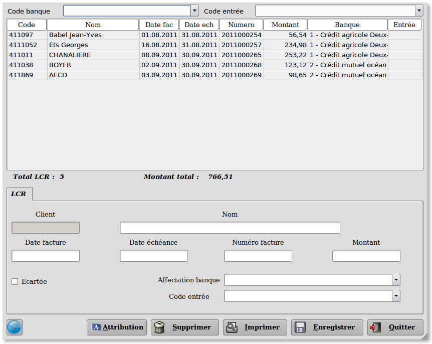
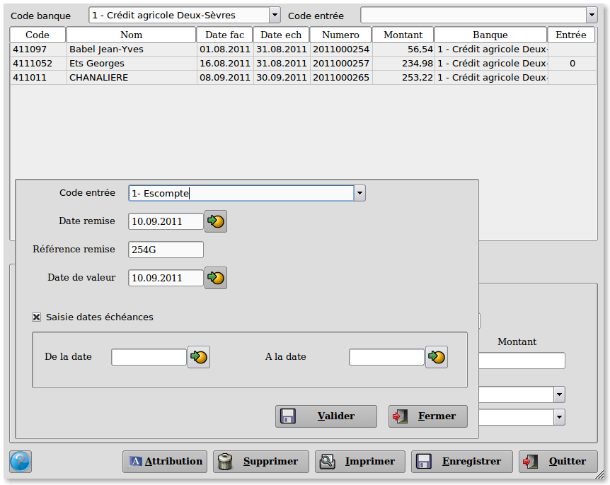

~ Laurux.LCR ~

~ Laurux.LCR ~ |
|
|
|
Préparation des bordereaux.

A l'entrée du programme l'ensemble des LCR pour l'ensemble des banques est affiché.
Il est possible alors de
sélectionner une LCR afin de modifier sa banque d'affection ou de
l'écarter si on ne souhaite pas travailler avec elle.
Il est également possible de modifier le code entrée.
Pour préparer le bordereau de
remise des LCR, on va d'abord sélectionner la banque avec laquelle on
souhaite travailler puis on va cliquer sur le bouton" Attribution".

La fenêtre qui s'ouvre permet de saisir le code entrée des LCR
traitées, la date de remise (c'est celle du jour qui est proposée), la
référence remise (c'est celle de la banque sélectionnée qui est
proposée) et la date de valeur (c'est celle du jour qui est proposée).
Il est possible de générer
un bordereau pour l'ensemble des LCR mais on peut aussi saisir une
fourchette de date d'échéance en activant le bouton "Saisie dates échéances"
----------------------------------------------------------------------------------------------------------------------